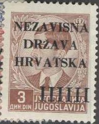
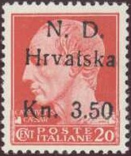
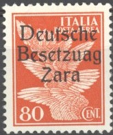

'NEZAVISNA DRZAVA HRVATSKA' or 'N.D. HRVATSKA'
Return To Catalogue - Yugoslavia
Note: on my website many of the
pictures can not be seen! They are of course present in the
catalogue;
contact me if you want to purchase the catalogue.
Croatia issued stamps from 1941 to 1945. It then became part of Yugoslavia. Some stamps of Yugoslavia were privately overprinted (for example 'NDH'), with the head of the king blackened or with the word 'Yugoslavia' crossed out with a pen. Mixted frankings between Croatian and Yugoslavian stamps are not rare in the early period (up to December 1941).

0.50 D orange 1 D green 1.50 D red 2 D red 3 D brown 4 D blue 5 D dark brown 5.50 D lilac
Inverted and double overprints exist (very rare).
0.25 D black 0.50 D orange 1 D green 1.50 D red 2 D red 3 D brown 4 D blue 5 D dark brown 5.50 D lilac 6 D grey 8 D brown 12 D violet 16 D violet 20 D blue 30 D lilac
1 D on 3 D brown 2 D on 4 D blue
0.25 D (+ 0.25 D) black (overprint red) 0.50 D (+ 0.50 D) orange (overprint blue) 1 D (+ 1 D) green (overprint red) 1.50 D (+ 1.50 D) red (overprint blue) 2 D (+ 2 D) red (overprint blue) 3 D (+ 3 D) brown (overprint blue) 4 D (+ 4 D) blue (overprint red) 5 D (+ 5 D) dark blue (overprint red) 5.50 D (+ 5.50 D) lilac (overprint red) 6 D (+ 6 D) grey (overprint red) 8 D (+ 8 D) brown (overprint red) 12 D (+ 12 D) violet (overprint red) 16 D (+ 16 D) violet (overprint blue) 20 D (+ 20 D) blue (overprint red) 30 D (+ 30 D) lilac (overprint blue)
Only 3000 sets were issued of these stamps. Most of them are unused, though some stamps exist with a first day cancel 'ZAGREB 10.V.1941' with arms of Croatia in the center.
1.50 D + 1.50 D grey 4 D + 3 D brown
50 p lilac 2 D blue 5 D orange 10 D brown

0.25 K red (castle of Ozalj) 0.50 K blue (falls of Jajce) 0.75 K black (castle of Varazdin, 1942) 1 K blue (mount Velebit) 1.50 K green (Zelenjak valley) 2 K red (Zagreb cathedral) 3 K red (Osijek church, 1942) 3.50 K brown (castle of Traksocan, 1944) 4 K blue (Drina view) 5 K black (Neretva bridge) 5 K blue (building in Zemun, 1942) 6 K brown (Dubrovnik) 7 K red (passag on the Save river) 8 K brown (Sarajevo mosque) 10 K lilac (lake of Plivice) 12 K olive (castle of Klis) 12.50 K grey (castle of Veliki Tabor, 1943) 20 K brown (harbor of Hvar) 30 K black (harvest) 50 K green (Senj) 100 K violet (Banja Luka) Overprinted '1941-1942 10.IV' and color changed (1942) 2 K brown 5 K red 10 K blue Surcharged (provisional issue) '0.25 kn' (red) and red bar on old value on 2 K red With 'F.I.' added in the upper right part of the design 100 K violet (issued for a philatelic exhibition in Banja Luka, 1942)
Tete-beche stamps exist.
These stamps exist wtih overprint 'DEMOKRATSKA FEDERATIVNA JUGOSLAVIA' (made in Split) and star and pattern through old country name, issued for Yugoslavia.

Another set of overprints exist with 'JUGOSLAVIJA' and star (Zagreb issue).
1.50 K + 1.50 K blue and red 2 K + 2 K brown and red 4 K + 4 K red-brown and red
These stamps exist printed in sheets where some spaces are printed with a red cross or the arms of Croatia only.
4 K + 2 K blue
2 K + 2 K brown 2.50 + 2.50 K green 3 K + 3 K red 4 K + 4 K blue
These stamps also exist printed in mini-sheets of two (different) stamps each.
3 K + 1 K red (people blowing horns) 4 K + 2 K brown (monument 'POMOC') 5 K + 5 K blue (mother and child)
1.50 K + 0.50 K red-brown and red 3 K + 1 K violet and red 4 K + 2 K blue and red 10 K + 5 K olive and red 13 K + 6 K dark red and red
1 K green and red
5 K + 6 K red-brown 4 K + 7 K brown
2 K + 1 K green and brown 3 K + 3 K dark brown and brown 7 K + 4 K blue and brown
3.50 K blue
5 K + 3 K red 7 K + 5 K green 12 K + 8 K blue
I have seen the 12 K + 8 K value printed in a minisheet with inscription "U USTASKA MLADEZ" in blue (both perforated and imperforate).
1 K blue (Kararine Zrinska) 2 K green (Krsto Frankopan) 3.50 K red (Petar Zrinski)
0.25 K red 0.50 K blue 0.75 K olive 1 K green 1.50 K black 2 K red 3 K red-brown 3.50 K blue 4 K lilac 5 K blue 8 K brown 9 K red 10 K dark brown 12 K olive 12.50 K black 18 K brown 32 K black 50 K blue 70 K orange 100 K violet
1 K + 0.50 K green (navy, Azov sea) 2 K + 1 K red (airforce, Sebastopol) 3.50 K + 1.50 K blue (attacking army, Stalingrad) 9 K + 4.50 K brown (army with trucks in background, Don river)
I have seen a minisheet with all four stamps with inscription "NEZAVISNA DRZAVA HRVATSKA ZA HRVATSKE LEGIONARE" in blue.
18 K + 9 K grey Overprinted 'HRVATSKO MGRB 8.IX.1943' in red 18 K + 9 K grey
1 K + 0.50 K green and red (mother with child) 2 K + 1 K red (mother with child) 3.50 K + 1.50 K blue and red (mother with child) 8 K + 3 K brown and red (nurse and wounded person) 9 K + 4 K green and red (nurse and wounded person) 10 K + 5 K violet and red (mother with child) 12 K + 6 K blue and red (nurse and wounded person) 12.50 K + 6 K brown and red (mother with child) 18 K + 8 K red-brown and red (nurse and wounded person) 32 K + 12 K black and red (nurse and wounded person)
2 K blue and red
3.50 K red 12.50 K brown
1 K green (destroyed city) 2 K red (wounded person) 5 K black (design as 2 K) 10 K blue (design as 2 K) 20 K brown (design as 2 K) 60 K red (design as 2 K, non-issued)

7 K + 3.50 K brown and red (posthorn) 16 K + 8 K blue (bird and aeroplane) 24 K + 12 K red (Mercury with staff) 32 K + 16 K black and red (wheel with wings)
7 K + 3.50 K red and lilac (St.Sebastian) 16 K + 8 K green and light green (wounded soldiers) 12 K + 12 K brown, light brown and red (scene from old mural) 32 K + 16 K blue and light blue (death of King Petar Svacic)
3.50 K + 1.50 K red (soldiers) 12.50 K + 6.50 K blue (soldiers) 12.50 K + 287.50 K black (Jure Francetic) 18 K + 9 K brown (Jure Francetic)
3.50 K + 1 K red (men with spades in front of arms) 12.50 K + 6 K grey (man with spade) 18 K + 9 K blue (officers) 32 K + 16 K green (Ante Pavelic inspecting the troops)
2 K + 1 K green and red 3.50 K + 1.50 K red 12.50 K + 6 K blue and red
50 K + 50 K red (soldiers) 70 K + 70 K black (soldiers) 100 K + 100 K blue (map of Croatia)
3.50 K + 1.50 K grey 12.50 K + 6 K red 24 K + 12 K green 50 K + 25 K lilac
3.50 K red
This stamp is very rare in used condition due to the conditions at the end of the war.
50 p violet 1 D red 2 D blue 5 D orange 10 D brown
0.50 K brown 1 K brown 2 K brown 5 K brown 10 K brown
0.50 K grey and blue 1 K grey and blue 2 K grey and blue 4 K grey and blue 5 K grey and blue 6 K grey and blue 10 K grey and blue 15 K grey and blue 20 K grey and blue Overprinted "JUGOSLAVIA" and star (all in red) for use in Jugoslavia (1945) 40 K on 0.50 K grey and blue 60 K on 1 K grey and blue 80 K on 2 K grey and blue 100 K on 5 K grey and blue 200 K on 6 K grey and blue
25 b red 50 b green 75 b green 1 K brown 2 K blue 3 K red 3.50 K red 4 K brown 5 K blue 6 K lilac 10 K green 12 K red 12.50 K orange 20 K blue Slightly different design 30 K brown and grey 40 K blue and grey 50 K red and grey 100 K black and lilac
I've seen some imperforate stamps of this set.
(-) red and black
(-) brown
Apparently this stamp exists cancelled to order with "FELDPOST - 24 III 1945".


'Kn. 3.50' on 10 c brown (Emperor Augustus) 'Kn. 3.50' on 20 c red (Julius Ceasar) 'Kn. 3.50' on 25 c green (King Victor Emanuel III facing the left) 'Kn. 3.50' on 30 c brown (King Victor Emanuel III) 'Kn. 3.50' on 50 c violet (King Victor Emanuel III)
5 c brown (wolf, overprint vertical) 10 c brown (Augustus) 15 c green (woman's head) 20 c red (Ceasar) 25 c green (Victor Emanuel III facing the left) 30 c brown (Victor Emanuel III full face) 35 c blue (woman's head) 75 c red (Victor Emanuel III facing the left) 1 L violet (Ceasar) 1.25 L blue (Victor Emanuel III facing the left) 1.75 L red (Augustus) 2 L red (woman's head) 2.55 L green (wolf) 3.70 L violet (wolf) 5 L red (wolf) 10 L violet (woman's head) 20 L green (Julius Ceasar) 25 L black (Augustus) 50 L violet (Victor Emanuel III facing the left) On stamps with attached war propaganda labels 50 c violet (navy) 50 c violet (army) 50 c violet (air force) 50 c violet (knife and helmet) Express stamps
1.25 L green 2.50 L orange Airmail stamps 25 c green 50 c brown 75 c brown 80 c red 1 L violet 2 L blue 5 L green 10 L red On postage due stamps (overprint vertically, reading downwards) 5 c brown 10 c blue 20 c red 25 c green 30 c orange 40 c black 50 c violet 60 c blue 1 L orange 2 L green 5 L violet
Misprints exist with inscription 'Besetzuag'.

I've seen a postcard (30 c brown with image of King Victor Emanuel III, inscription "CARTOLINA POSTALE"), with the same overprint.
50 c violet (Victor Emanuel III full face) On stamps with attached war propaganda labels 25 c green (army) 25 c green (air force) 25 c green (knife and helmet) 30 c brown (army) 30 c brown (navy) 30 c brown (air force) 30 c brown (knife and helmet) On postage due stamps

10 c blue On express stamps 1.25 L green 2.50 L orange
Capital of Slovenia
On Italy Imperial issue of 1929 5 c brown 10 c brown 15 c green (red overprint) 20 c red 30 c brown 35 c blue (brown overprint) 50 c violet (red overprint) 75 c red 1 L violet 1.25 L blue (red overprint) 1.75 L red 2 L red 2.25 L on 5 c brown 5 L on 25 c green 10 L violet 20 L on 20 c red 25 L on 2 L red 50 L on 1.75 L red (red overprint) On Express stamp of Italy 1.25 L green (green overprint) On airmail stamps of Italy 25 c green (red overprint) 50 c brown (red overprint) 75 c brown 1 L violet (red overprint) 2 L blue 2 L grey (airmail express stamp) 5 L green (red overprint) 10 L red On postage due stamps of Italy 20 c red (overprint in red) 25 c green 30 c on 50 c violet 40 c on 5 c brown 50 c violet 1 L orange 2 L green 5 L on 5 c brown 10 L blue

On King Victor Emanuel III facing the left 10 c red (King in circle) 10 c green (King in rectangle, overprint in red) 50 c blue (King in rectangle) 10 L brown (King in ellipse, overprint in red)
http://placomuso.free.fr/croatie/Croatie40.htm (nice site concerning the stamps of Croatia, in French).
Stamps - Francobolli - Timbres - Briefmarken - Postzegels
{kind=link}